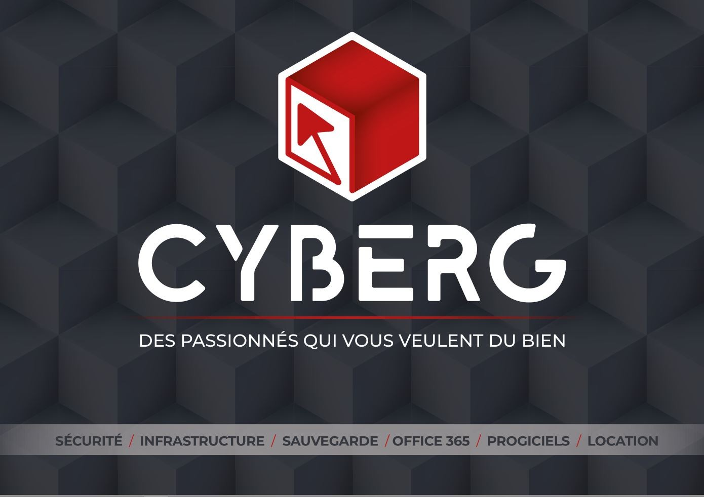
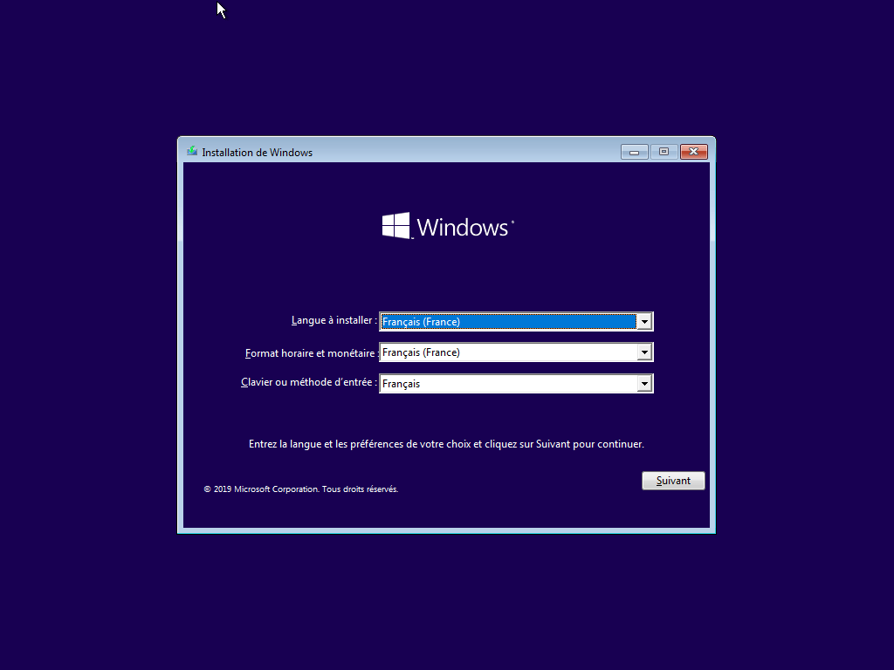
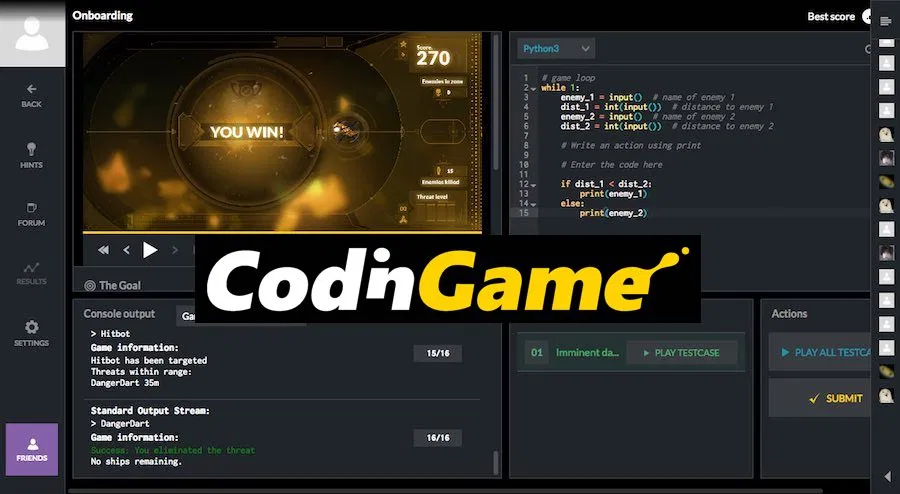
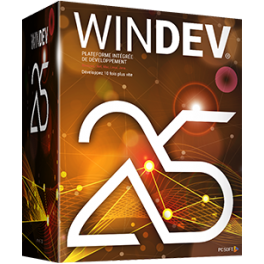

L'entreprise se nomme Cyberg, elle est en activitée depuis 2014. Cituée à Annonay(07100), elle est spécialisée dans le secteur d'activité de la programmation informatique. Son effectif est d'environ 12 personnes. Sur l'année 2019 elle réalise un chiffre d'affaires de 1 049 400,00 €. Le président de la société Cyberg est Jean-Marie FRESSENON.

Mon stage à été effectué du 08/02/2021 au 19/02/2021 et du 12/04/2021 au 23/04/2021, c'est à dire durant les vacances de février et avril.
Côté infrastructure systèmes et réseaux :
- Aide les clients pour leurs infrastructures interne en les optimisant,
- Support technique en cas de problèmes dans l'infrastructures ou pour les appareils des clients.
Côté développements :
- Développent de logiciels pour les clients selon leurs demande et besoin
- Améliorations leurs logiciels avec des ajouts et des mises à jour.
Durant la première semaine j'ai réalisé différentes tâches côté infrastructure et réseau qui sont:
- Installation Windows 10 pro sur des vieux PC pour les donner à des associations,

- Installation Windows 10 pro avec les application de base pour les clients,
- Résoudre des problèmes mineur sur les ordinateurs des clients.
Pour les 3 autres semaines j'ai été du côté développements, cependant les 2 semaines d'avril ce sont déroulés en distanciel. Durant la dernière semaine de février j'ai fais quelques exercices sur le site Codingames

, et j'ai commencer à apprendre à utilisé Windev25. J'ai également pu voir comment travaillaient les développeurs aux sein de l'entreprise ainsi que se qu'ils faisaient.
Durant les deux semaines j'ai continué à apprendre à utiliser Windev, qui à vraiment de très nombreuses utilisations.
